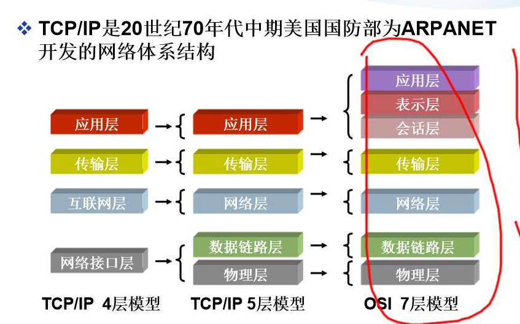
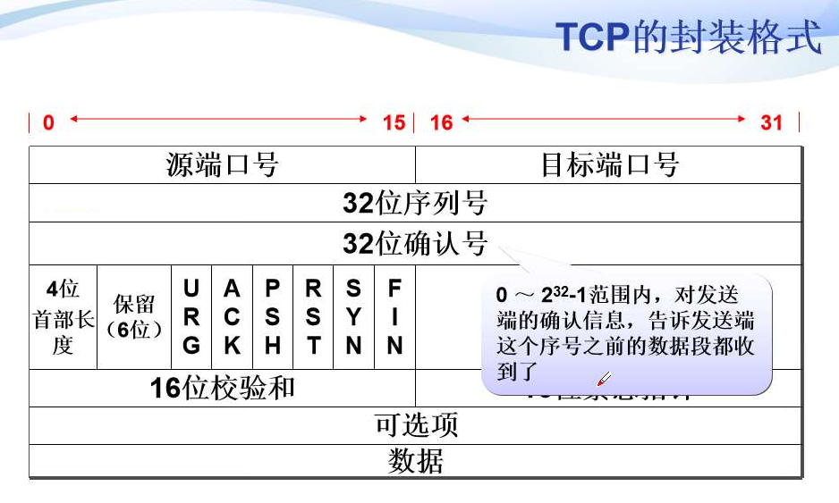
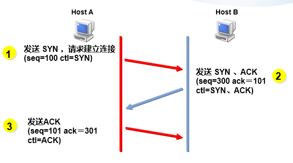
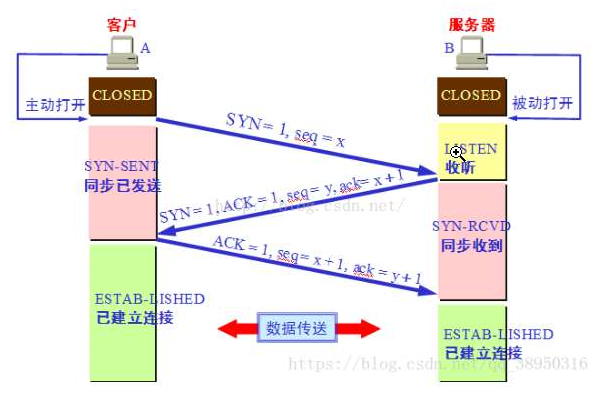
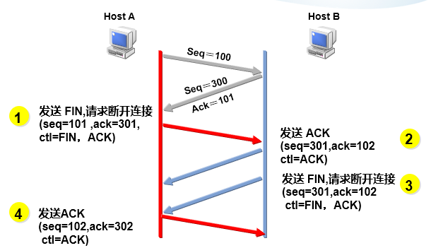
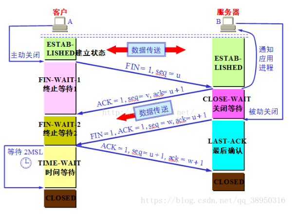

查看内存排名前十的进程
ps aux|sort -k 4 -rn|head查看服务器打开了哪些网络的端口？
如何知道网卡的流量？
tcp的拥堵控制和流量控制？
TCP/IP协议参考模型（OSI 7层模型）（应表会传网数物）

交换机在数据链路层
路由器在网络层
应用层协议（http\ssh）
传输层协议（TCP\UDP）
TCP/IP模型与OSI模型的比较
- 相同点
- 两者都是以协议栈的概念为基础
- 协议栈中的协议彼此相互独立
- 下层对上层提供服务
- 不同点
- OSI是先有模型：TCP/IP是先有协议，后在模型
- OSl适用于各种协议栈；TCP/IP只适用于TCP/IP网络
- 层次数量不同
- 相同点
传输层
- 传输层的作用
- IP层提供点到点的连接
- 传输层提供端到端的连接（端到端：一个程序到另一个程序，不同程序会监听不同的端口）
- django默认监听8000端口
- nginx也可以监听8000端口
- 通过不同的端口号来识别不同的程序
TCP
(Transmission Control Protocol)
相当于打电话
传输控制协议
可靠的（各种计时器）、面向连接（三次握手、四次断开）的协议
传输效率低
TCP的封装格式

理论上的端口号范围：0-65536（实际上在使用的是1-65535）
ACK：（acknowledge）确认序列号有效位，表明该数据包包含确认信息
SYN：为1时，请求建立连接
FIN：为1时，数据发送完毕，请求端口连接
16位窗口大小：滑动窗口的大小，指明本地可接收数据的字节数
连接与断开
三次握手


- SYN置为1
- SYN置为1，ACK置为1
- ACK置为1
- 5种状态
- LISTEN：监听服务启动，准备好了，等待其他程序连接的状态
- ESTABLISHED：建立连接
- SYN_SENT
- SYN_RECV
- CLOSED
- 可以拿ssh服务来举例说明
- ssh是保持长连接的
四次断开


可以拿ssh服务来举例说明
为什么要time_wait?
防止最后发送的ack数据包丢失，导致对方没有收到，一直处于last_ack状态，对方有个重传计时器，超时，会触发重新再发一次FIN位为1的断开数据包。这样因为time_wait计时器如果没有超时会再次接受到FIN位为1的数据包，然后会再发一次最后的ack确认包。
如果web nginx 服务器上有大量的time_wait状态，说明了什么？
答案：服务器正在和客户机断开
流量控制
- 滑动窗口的作业：告诉对方我这边能接受多少字节的数据
- MTU：最大传输单元1500
- 数据帧的范围：64—1518
- 抓包工具：科来、tcpdump、wireshark、sniffer
拥塞控制
- 原理：通过互相通知window size 来告诉对方能接收多少数据，这样发送方就发送多少数据，从而达到不丢失数据。
- 目的：不丢失数据
- OOM:out of memory(内存溢出)
- 现在的正在使用的算法：通过window size 来判断前方是否拥堵。
- 其他的算法：BBR算法
差错控制
3种方式
- 校验和
- 确认
- 受损伤的数据段
- 丢失的数据段
- 重复的数据段
- 失序的数据段
- 确认的丢失
- 超时
计时器
可靠性
- 重传计时器：为了控制丢失的数据段
- 坚持计时器：为了防止零窗口死锁（window size为0时候，双方进入等待状态，防止死锁）
- 保活计时器：防止两个TCP之间的连接长时间的空闲（服务器用来探测客户机是否还在连接，如果不连接了，就断开连接，回收（进程、cpu、内存））
- 时间等待计时器：连接终止期间使用的。四次断开的最后阶段时候，自己给对方发送的数据丢失，烤虑到对方会重新发送数据段过来，才开启的计时器。其实是为了对方考虑，不耽误对方的时间
TCP的应用
| 端口 | 协议 | 说明 |
|---|---|---|
| 21 | FTP | 文件传输协议，用于上传、下载 |
| 23 | Telnet | 用于远程登录，通过连接目标计算机的这一端口，得到验证后可以远程控制管理目标计算机 |
| 25 | SMTP | 简单邮件传输协议，用于发送邮件 |
| 53 | DNS | 域名服务，当用户输入网站的名称后，由DNS负责将它解析成IP地址，这个过程中用到的端口号是53 |
| 80 | HTTP | 超文本传输协议，通过HTTP实现网络上超文本的传输 |
| 443 | HTTPS | 超文本传输安全协议），是以安全为目标的HTTP通道，简单讲是HTTP的安全版。即HTTP下加入SSL层，HTTPS的安全基础是SSL，因此加密的详细内容就需要SSL。 |
| 22 | SSH | SSH 是目前较可靠，专为远程登录会话和其他网络服务提供安全性的协议。 |
注：在nginx里
/etc/service—–>此文件会记录着世界上开源的免费的协议使用的端口号和tcp还是udp
UDP
(User Datagram Protocol)
相当发短信
用户数据报协议
不可靠的、无连接的服务
传输效率高
UDP的流控和差错控制
- UDP没有流控机制
- UDP只有校验和来提供差错控制
- 需要上层协议来提供差错控制：例如TFTP协议
UDP的使用
| 端口 | 协议 | 说明 |
|---|---|---|
| 69 | TFTP | 简单文件传输协议 |
| 53 | DNS | 域名服务 |
| 123 | NTP | 网络时间协议 |
| 111 | RPC | 远程过程调用 |
TCP/IP协议栈
| 数据链路层 | PPP、Ethernet |
|---|---|
| 网络层 | ip、arp、icmp、rip、ospf |
| 传输层 | tcp、udp |
| 应用层 | http、ftp、smtp、ntp、https、dns、QQ |
常见面试题
【问题1】为什么连接的时候是三次握手，关闭的时候却是四次握手？
答：因为当Server端收到Client端的SYN连接请求报文后，可以直接发送SYN+ACK报文。其中ACK报文是用来应答的，SYN报文是用来同步的。但是关闭连接时，当Server端收到FIN报文时，很可能并不会立即关闭SOCKET，所以只能先回复一个ACK报文，告诉Client端，”你发的FIN报文我收到了”。只有等到我Server端所有的报文都发送完了，我才能发送FIN报文，因此不能一起发送。故需要四步握手。
【问题2】为什么TIME_WAIT状态需要经过2MSL(最大报文段生存时间)才能返回到CLOSE状态？
答：虽然按道理，四个报文都发送完毕，我们可以直接进入CLOSE状态了，但是我们必须假象网络是不可靠的，有可以最后一个ACK丢失。所以TIME_WAIT状态就是用来重发可能丢失的ACK报文。在Client发送出最后的ACK回复，但该ACK可能丢失。Server如果没有收到ACK，将不断重复发送FIN片段。所以Client不能立即关闭，它必须确认Server接收到了该ACK。Client会在发送出ACK之后进入到TIME_WAIT状态。Client会设置一个计时器，等待2MSL的时间。如果在该时间内再次收到FIN，那么Client会重发ACK并再次等待2MSL。所谓的2MSL是两倍的MSL(Maximum Segment Lifetime)。MSL指一个片段在网络中最大的存活时间，2MSL就是一个发送和一个回复所需的最大时间。如果直到2MSL，Client都没有再次收到FIN，那么Client推断ACK已经被成功接收，则结束TCP连接。
【问题3】为什么不能用两次握手进行连接？
答：3次握手完成两个重要的功能，既要双方做好发送数据的准备工作(双方都知道彼此已准备好)，也要允许双方就初始序列号进行协商，这个序列号在握手过程中被发送和确认。
现在把三次握手改成仅需要两次握手，死锁是可能发生的。作为例子，考虑计算机S和C之间的通信，假定C给S发送一个连接请求分组，S收到了这个分组，并发 送了确认应答分组。按照两次握手的协定，S认为连接已经成功地建立了，可以开始发送数据分组。可是，C在S的应答分组在传输中被丢失的情况下，将不知道S 是否已准备好，不知道S建立什么样的序列号，C甚至怀疑S是否收到自己的连接请求分组。在这种情况下，C认为连接还未建立成功，将忽略S发来的任何数据分 组，只等待连接确认应答分组。而S在发出的分组超时后，重复发送同样的分组。这样就形成了死锁。
【问题4】如果已经建立了连接，但是客户端突然出现故障了怎么办？
TCP还设有一个保活计时器，显然，客户端如果出现故障，服务器不能一直等下去，白白浪费资源。服务器每收到一次客户端的请求后都会重新复位这个计时器，时间通常是设置为2小时，若两小时还没有收到客户端的任何数据，服务器就会发送一个探测报文段，以后每隔75秒钟发送一次。若一连发送10个探测报文仍然没反应，服务器就认为客户端出了故障，接着就关闭连接。
【问题5】四次挥手释放连接时，等待2MSL的意义？
1.为了保证A发送的最有一个ACK报文段能够到达B。这个ACK报文段有可能丢失，因而使处在LAST-ACK状态的B收不到对已发送的FIN和ACK报文段的确认。B会超时重传这个FIN和ACK报文段，而A就能在2MSL时间内收到这个重传的ACK+FIN报文段。接着A重传一次确认。
2.就是防止上面提到的已失效的连接请求报文段出现在本连接中，A在发送完最有一个ACK报文段后，再经过2MSL，就可以使本连接持续的时间内所产生的所有报文段都从网络中消失。